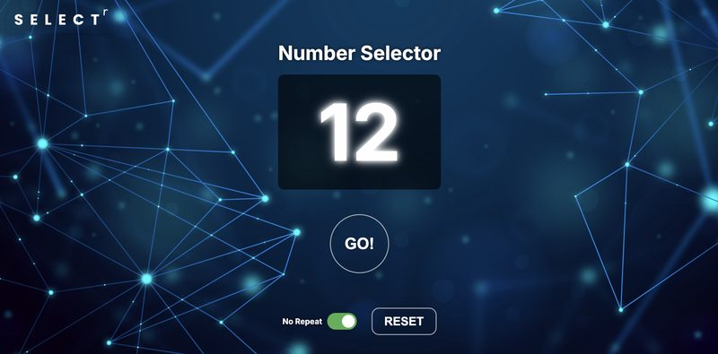
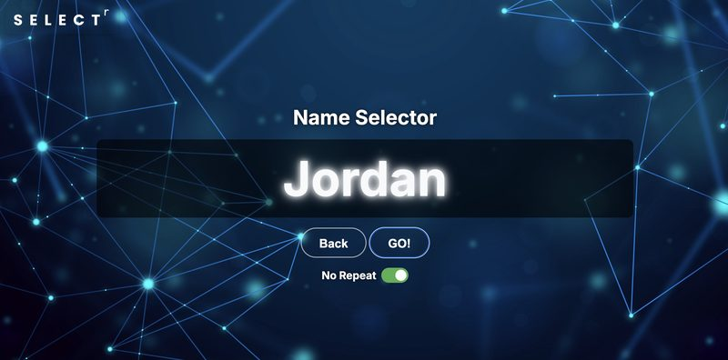
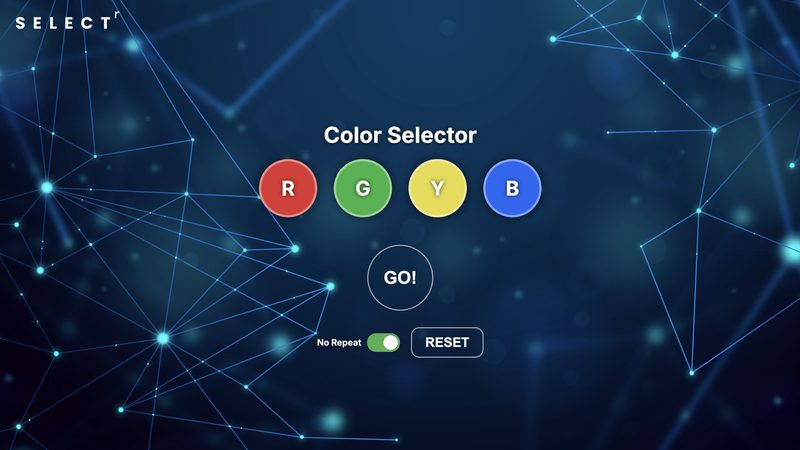
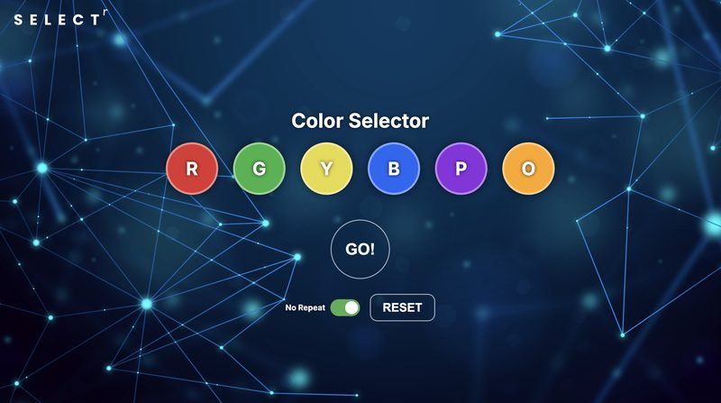
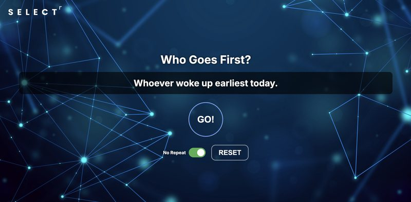

Selectors
Selectors can randomly pick students for whole class, table teams, small groups, or even pairs—just press GO! Using randomized selectors keeps everyone on their toes and can boost participation and engagement. It's like digital popsicle sticks!
SELECTr PLUS: All in One Tool
Every RobsonEDU selector, now in one place. Call on students with a spinning wheel, a flip drum, numbers, fun Who's First prompts, or seat colors, and make random groups in one click, with four themes and a built-in timer. Your classes and settings are saved on your device.
New here? A quick tour runs the first time you open it. Want it as an app? Follow these instructions.
Jump Straight to a Tool
Pick a Theme
Pick a theme below to open SELECTr PLUS with that look. You can switch themes anytime with the palette button in the dock.
Original Selectors
Number Selector

Name Selector

Color Selector

6-Color Selector

Who Goes First?

How to Use SELECTr PLUS
SELECTr PLUS is a free random name picker for teachers. Spin a wheel or drum to call on single students to share, explain, or even for a giveaway. Pick a number for who is going to report for the team, or enter a custom number that represents any desk number in your room. Now you have a wheel, but you don't have to manage the names. Spin… 23. Now whoever is in desk 23 restates the instructions you just gave the class. Spin again, 7: “Restate the directions for this assignment again, please!” Then, let a “Who's First” prompt decide who starts: “Whoever has the next birthday coming up.” Now classmates get to learn about each other, and they learn Jared's birthday is tomorrow! If names are loaded, you can make random groups or teams of any size in one click.
How I use it in my classroom
I built SELECTr because I wanted a fair, varied way to call on students wherever I'm teaching: my classroom, another teacher's room, the gym, the library, or even outside in the courtyard. Calling only on raised hands lets the same few students carry the class, and the others disconnect or opt out of the thinking and learning. When anyone can be picked, everyone stays ready to answer and has extra incentive to participate in practice or collaboration.
I spin the wheel or drum to pick three or four students for a check for understanding, to sample the class. I can choose for class jobs or roles. In another teacher's room, in RTI groups, or anytime I don't have names loaded, I use Numbers to call Kagan team seats 1–4, pairs A/B, or individual numbered seating. Who's First is great to change things up and to direct who goes first in any situation, because it's based on characteristics like who has the most letters in their name. Works great for pairs during movement structures like Stand Up–Hand Up–Pair Up. When we use color chips or Uno cards for grouping, I spin Colors.
Get started in five steps
- Open SELECTr PLUS and pick a theme. A quick tour runs the first time.
- Add your class. Open the Roster, paste names one per line or upload a .txt or .csv file, and save. You can rename each class.
- (Optional) Mark who's here. Tap a name to mark that student absent for today. Your saved list doesn't change.
- Spin. Press Spin or the Space bar. Use the up and down arrow keys to switch between Wheel, Drum, Numbers, Who's First and Colors.
- Pick what happens next. After a name comes up, choose Done, Next name, Pass or Absent.
Which picker should I use?
| Wheel or Drum | Calling on individual students: checks for understanding, presenters, leaders. Drum is easier to read with a big class or long names. |
| Numbers | Calling team seats (1–4), letters (A–B for partners), or any range up to 999. No names needed, so it works in any room that has numbered desks. |
| Who's First | Deciding who starts in a pair or group with a fun prompt. Great for out-of-seat or movement structures and team building. |
| Colors | Color-based selection with color chips, cards or color-based grouping. Choose 2 to 6 colors. |
| Random Groups | Mixing students into groups of any size in one click. Add a rule to block certain students from being placed together. Great for in-the-moment random small groups, or splitting the class into 2, 3, 4 or more teams for a competition. |
Teacher questions
How do I pick students without repeating names?
Leave No repeat on, which it is by default. Each student picked leaves the wheel until you start a new round, so everyone gets a turn. Turn on Fair mode and students who were called less this week get a bigger slice of the wheel.
Should I call on one student or a team number?
Call a team number when every team has talked it over first. “Number 3s, share your team's answer” keeps every student and every team accountable. It gives quieter students a safety net, and insecure students a chance to check answers before being cold called. Call individuals when you need to check one student's understanding, or when you're choosing presenters or leaders.
How do I switch between my slides, the picker and a timer?
Keep SELECTr PLUS open in its own browser tab next to your slides. It has a timer built in: press T to show or hide it, so you don't need a third window. Press F for full screen. It also works with many presentation clickers: the Space bar spins, and the up and down arrows switch tools.
What if I'm in another teacher's room or don't have names loaded?
Let's say you have a set of popsicle sticks, but you aren't in your room! Now you have it covered, because SELECTr goes with your computer. Use Numbers, Colors or Who's First. None of them need a class list, so you can start picking in seconds anywhere: a sub plan, an RTI group, the gym or outside.
Can it make random groups?
Yes. Open Random Groups, choose how many students per group, and shuffle. You can add pairs who should never be in the same group, and SELECTr remembers them for each class. If you want strategic groups based on data or criteria, check out our Grouping Studio: Seating Charts & Groups tool.
What if I need two selectors running at the same time?
Turn on the Task Spinner in Settings, and a small drum works as a second selector. For example, it picks a prompt after each name, such as Summarize, Predict or Ask a question. You can write your own list. This is great for end-of-class checks for understanding.
Where are my class lists saved?
In your browser, on your own device. There's no sign-in, and names are never sent to RobsonEDU. Because the lists live on one device, download a backup from Settings now and then, so you can restore them on another computer or after clearing your browser.
SELECTr PLUS is free, ad-free and needs no sign-in. Student names stay on your device. Read how we handle privacy.